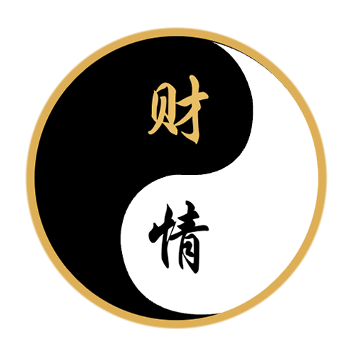

中
|
EN

财情双生智库
Econ-Sentiment Twin Think Tank
金融 × 情绪 · 对立统一 · 一站式资产决策系统
财 情 双 生 · 智 慧 有 温 度
— 苦 难 变 智 慧 · 矛 盾 变 双 赢 · 烦 恼 变 成 长 —
汇率实时
金价实时
6/8 国股指实时
8 国宏观
3 国周期
6 套子系统
6 大子系统 · 点击进入
01
📊
宏观监控系统
实时
Macro Surveillance
5 维度全球压力仪表（综合压力指数 + 5 张变量卡 + 4 情景研判），重点突出「市场传染」作为压力读数。
用法举例：
开盘前看「综合压力指数」+「市场传染」色卡 → 判断今日风险偏好 → 决定仓位。
压力仪表
5 变量
4 情景
5 秒刷新
进入系统
02
🕐
美林时钟
8 国
Merrill Lynch Investment Clock
8 国（CN/US/JP/GB/DE/KR/IR/RU）同步美林时钟定位 + 10Y 国债利率对比 + 2010-2026 历史周期轨迹。
用法举例：
勾选 3 国 → 看三国时钟象限位置 + 10Y 利差 → 找套利窗口（中国复苏 + 美国滞胀）。
8 国复选
10Y 国债
2010-2026 轨迹
跨市场联动
进入系统
03
📜
周金涛三国周期
深度
Kondratieff Cycle Analysis
用康波周期框架（50-60 年长波）系统分析中美日三国当前周期定位 + 9 章深度报告 + 情景推演。
用法举例：
每月看一次「核心结论」章 → 校准宏观战略 → 决定大类资产久期（黄金/股票/债券的仓位）。
康波定位
3 国深度
9 章分析
情景推演
进入系统
04
💰
资金流向监测
最新 v5
Fund Flow Surveillance
8 国（CN/US/JP/GB/DE/KR/IR/RU）资金链全景 · 实时汇率/金价/6 国股指 · 央行资产负债表 + 黄金存量 + 美元计价 + 10 年趋势 + 数据源对照表。
用法举例：
必看系统 → 顶部状态条（4 源实时状态）+ 实时行情条 → 央行资产负债 doughnut → 底部数据源对照表确认数据新旧。
实时 3 件套
8 国央表
USD 切换
10 年趋势
数据源对照表
进入系统
05
📈
股债汇监测
8 国
Equity · Bond · FX Monitor
8 国（CN/US/JP/GB/DE/KR/IR/RU）三国市场（股票/债券/外汇）实时监测 + 年/月/周三维趋势判断引擎。
用法举例：
勾选 5 国 → 看「年/月/周」三维趋势信号 → 找出「强势上行」国家（趋势确立）做多。
8 国 3 市场
三维趋势
风险偏好评分
10 秒刷新
进入系统
06
🥇
黄金 XAUUSD
实时
Gold Quad-Dimension Monitor
黄金四维（年/月/周/日）监控 + 多品种（XAU/XAG/XPT/XCU/WTI）+ 金银比 + 相关性矩阵 + 可调权重判断引擎。
用法举例：
日内看「日线判断」+ 蜡烛图 → 中期看「金银比 + 黄金月线」+ 调判断引擎权重 → 决定买卖时机。
4 维度
5 品种
金银比
可调权重
进入系统
07
💱
直盘货币对
财情方法论
FX Major Pairs · Quad-Dimension Analysis
6 大直盘（EURUSD/USDJPY/GBPUSD/USDCHF/AUDUSD/USDCAD）月/周/日/时四维判断引擎 · 基本面（央行利率/利差）+ 技术面（MA/RSI/MACD）+ 情绪面（DXY/COT）+ 量化（波动率/相关性/动量）。
用法举例：
交易前 5 分钟 → 看 EURUSD 月/周/日/时四维信号 → 若多维度共振做多 → 设证伪条件止损（财情方法论「可证伪性 > 可解释性」）。
6 对可复选
四维判断
财情证伪
免费 API
进入系统
典型决策路径 · 6 步法
1
看长周期
月度 → 周金涛报告：康波定位 + 大类资产时钟
2
看中美日周期
月度 → 美林时钟：8 国象限 + 套利窗口
3
看资金流向
月度/周度 → 资金流向：M2/社融/央表 + 实时利率
4
看股债汇
周度 → 股债汇：8 国三维趋势判断
5
看宏观压力
日度 → 宏观监控：综合压力 + 5 变量
6
看品种深探
日内 → 黄金：四维 + 可调权重 + 蜡烛图
数据更新时间一览
🔄 实时层
汇率：每日 UTC 00:02
金价：秒级更新
A股/美股：盘中实时
日经/DAX/FTSE/KOSPI：盘中实时
📅 官方发布节奏
M2（CN）：每月 10-15 日
M2（US）：每周四 H.6
社融：每月 10-15 日
央表：周/月频
📊 估算层
股票/房产市值：年度快照
TEDPIX/MOEX：无免费源·模型
GDP 校验：World Bank 年度
（详见各系统数据源对照表）